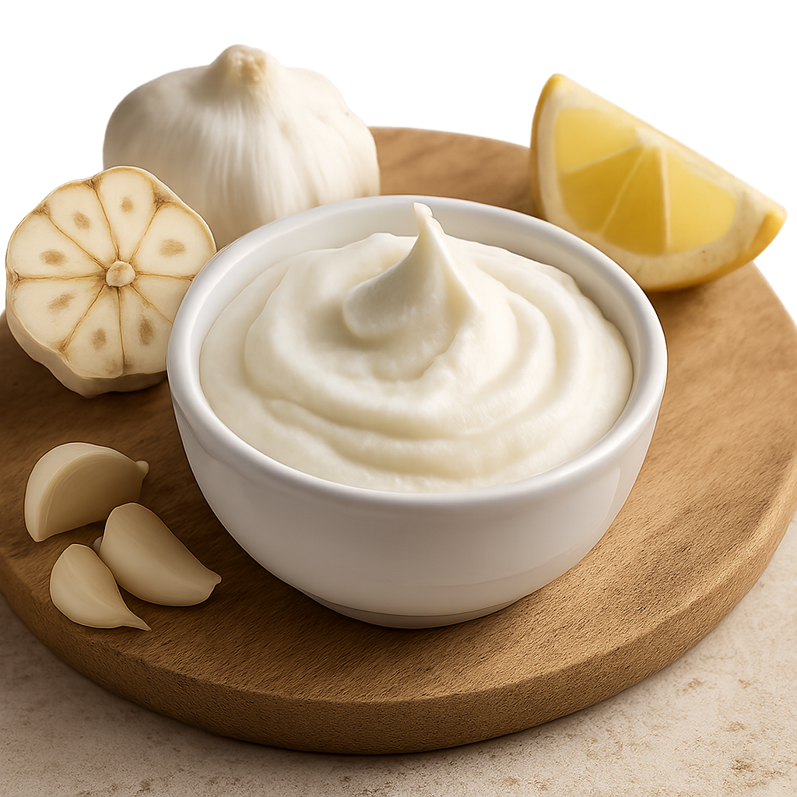

Toom_sauce
Home
Toom_sauce Recipe

Ingredients
- 30 cloves of garlic
- 2 to 3 tbs of lemon juice
- 2 to 3 cups of any neutral oil
- 1 tbs of salt
Directions
- Add 30 cloves of garlic in a food processor and mince it to really small pieces
- add the salt and lemon juice and imulsify them completely you will start seeing the mayo like texture
- first slowly add 1 cup of oil to completely imulsify it
- stop the blender and and scrape the sides and now add the rest of the oil slowly to completely imulsify it to gain the beautiful garlic sauce
- refrigirate it for future use